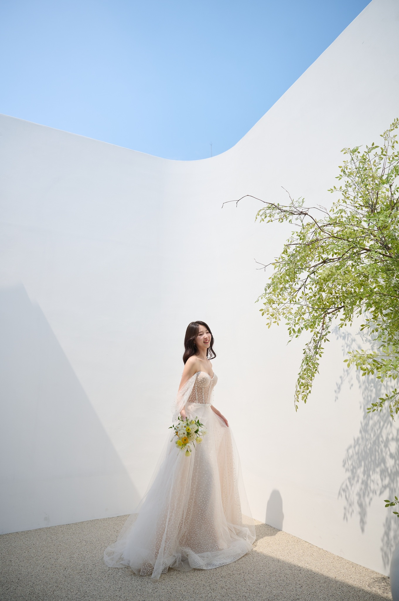

About the couple
It was the fall of 2018 in the town of Oxford,
when a boy who seemed to be too outgoing to befriend
met a girl who rushed back to her place a few minutes after the encounter,
saying she forgot to do the laundry.
It is the summer of 2022,
and the two are now getting married.
It would make a great day
if you could join us at the start of this unexpected yet destined journey.
